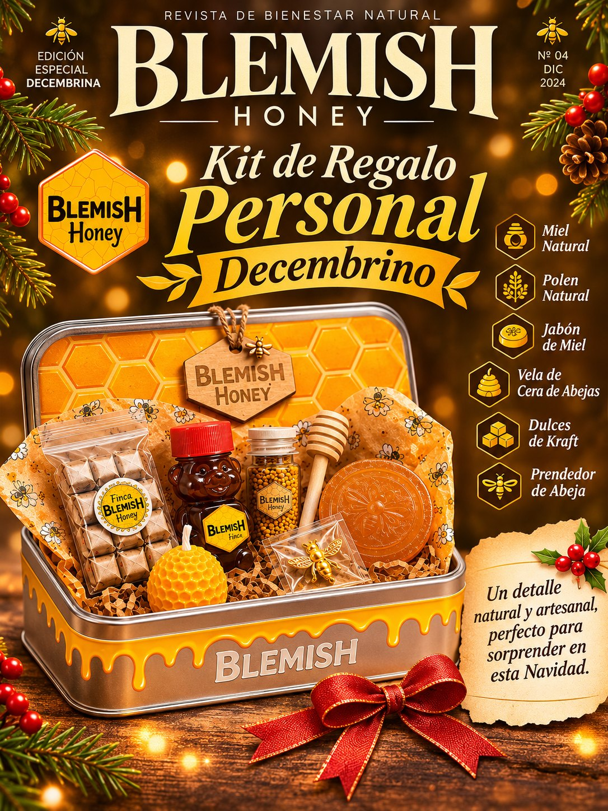

← Volver a Kits de Regalo · Kits de Regalo

Kit Personal Navideño
Kit de regalo navideño · 7 productos de la colmena
$70.000 + IVA
Un detalle natural y artesanal, perfecto para sorprender en esta Navidad, con productos de las colmenas de Finca Blemish en Jamundí.
Incluye
- Miel de abejas en frasco de osito por 80 g
- Frasco de polen natural por 30 g
- Jabón natural de miel por 50 g
- Palo de madera para miel de 8 cm
- Vela de cera de abejas con fragancia de miel
- 12 dulces de kraft con sabor a miel
- Un prendedor dorado en forma de abeja
Características
- Origen: Finca Blemish, Jamundí, Valle del Cauca (Colombia)
- Presentación: lata de regalo navideña
- Ideal para regalar en Navidad